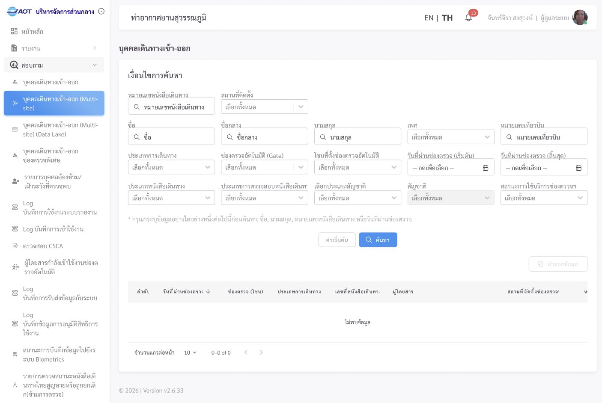
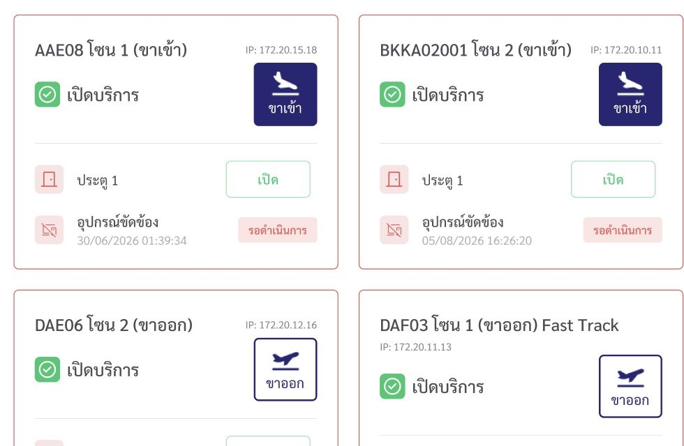
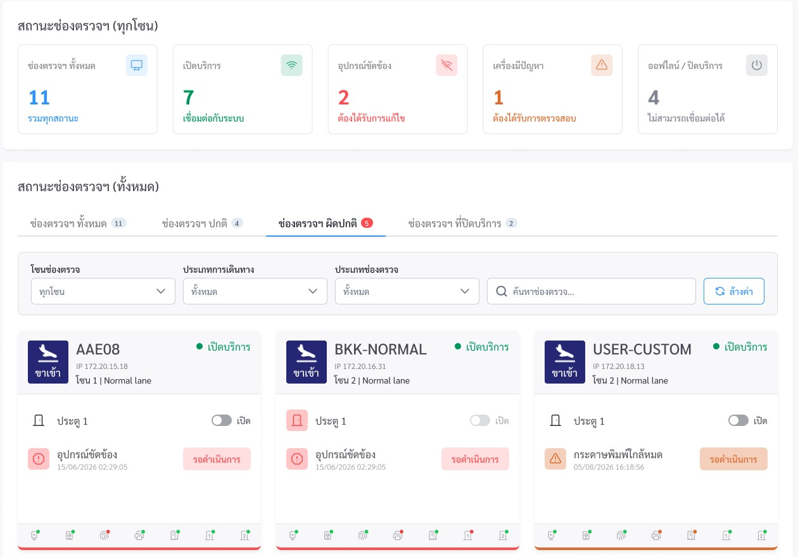
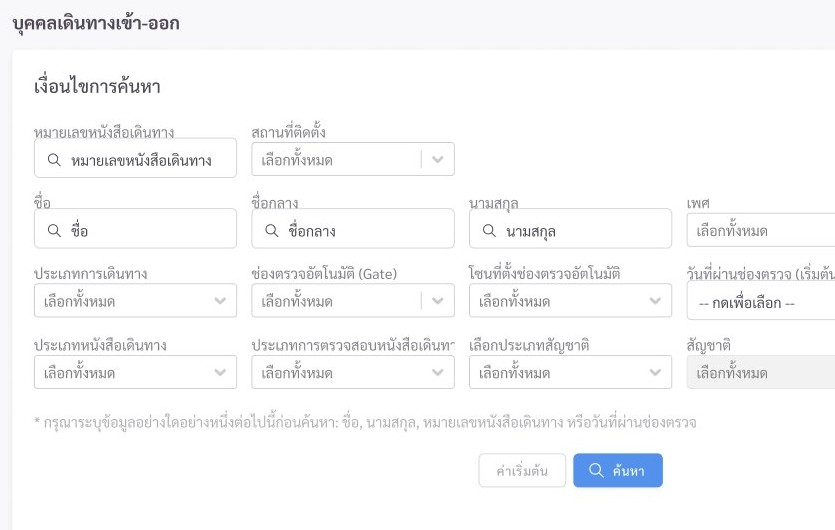
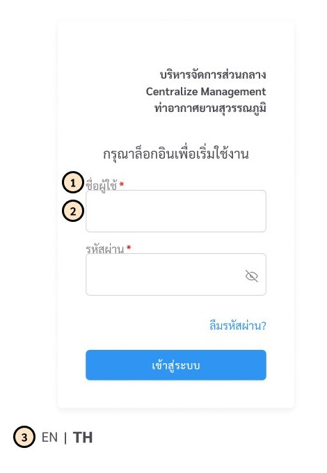
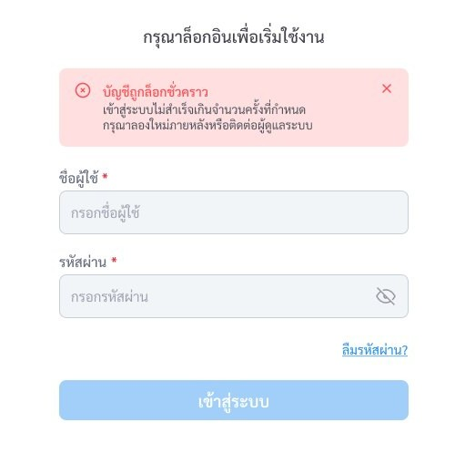

10modules reviewed
10heuristics as the checklist
6user groups mapped
9root problems found
Redesign of the back-office tool airport and immigration staff use to monitor and control automated passport gates.

Next I mapped the existing menu tree and traced each finding back to it. Most screen-level issues came from the same nine causes, so those nine became the brief.
| Root problem | What it costs staff |
|---|---|
| Menus follow modules, not tasks | Hard to find a function. Long time to learn the system. |
| No clear workflow | Staff must already know which menu, which button, and where to go next. |
| Lots of data, no priority | Reading whole tables to find the one thing that matters. |
| Too many filters and search fields | Searching and checking take longer than the task itself. |
| Inconsistent UI | The same interaction is relearned in every module. |
| View and edit look the same | Unsure whether a detail page is read-only or a form. |
| Permissions ticked one by one | Long lists that are hard to review before saving. |
| Technical menu names | New staff learn the vocabulary before they can learn the job. |
| Features keep piling up | Every request added another menu, pattern, modal, filter or master-data list. |


Cropped to the part that changed, at full size. Before on the left, after below.
Counts become filters. Staff start on “Abnormal 5”, and each card carries one issue and its time.


“Failed 2 of 4” sits above everything. Face and fingerprint results sit next to each other with their pass line.


Opening a gate lets a passenger through without a full check, so it now stops for a moment.


One search card replaces the wall of fields. Results and status come first.


The same departure report on Template A: filters open, KPIs first, then by zone and gate.


The review flagged an unclear username field and a language switch detached from the form. The new login also covers locked, suspended and pending accounts.

